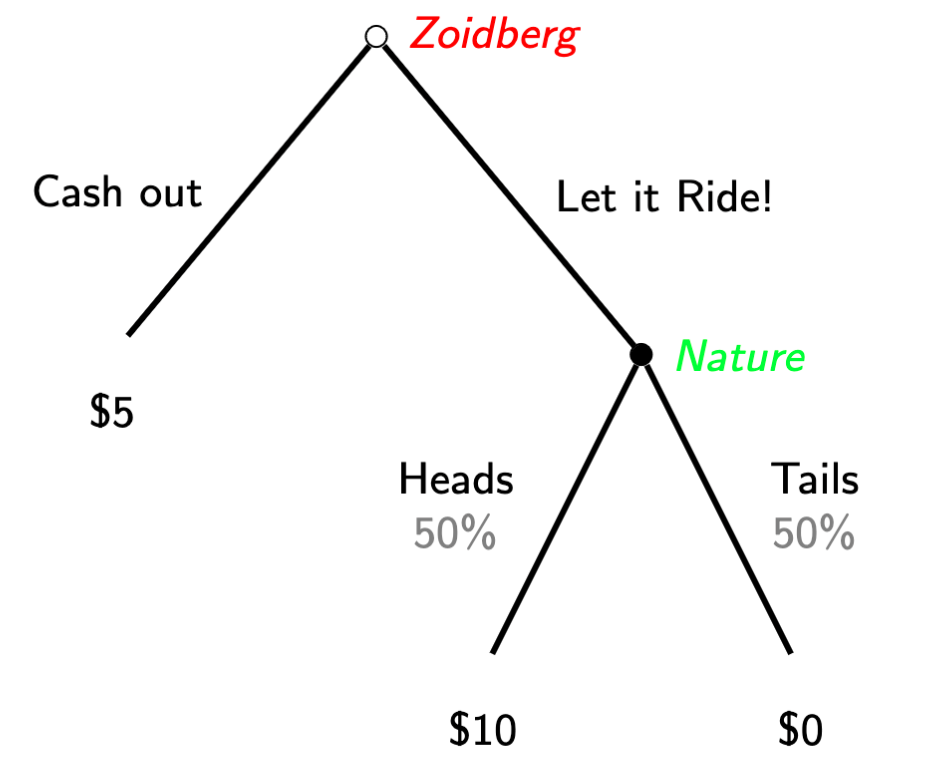

Thinking about Randomness
“I, at any rate, am convinced that [God] does not throw dice”
- Albert Einstein 1
Thinking about Randomness
“Rational decision makers are able to give reasons for each action they take; outside Las Vegas players do not spin roulette wheels”
- Ariel Rubenstein 2
Thinking about Randomness
Why should we use mixed strategies?!
As we saw in Activity 2, rarely do real life data fit in completely deterministic models
You can interpret the mixed strategy of one player as the beliefs of other players in equilibrium
Learning some basics of probability theory will help you outside of this class
Lotteries
In this class, any choices with uncertain payoffs will be called lotteries.
A lottery doesn’t have to only be about money
For any set of outcomes in a lottery, there will be an associated probability: if \(a\) is a possible outcome, then \(P(a)\) is the probability that it occurs.
- All probabilities must be between 0 and 1: \(0 \leq P(a) \leq 1\) for all possibilities \(a\).
- Additionally, the probabilities given in a particular lottery must sum to exactly 1: we will assume that one, and exactly one, outcome must actually occur.
Expected Utility
How can you know how much you like a given lottery if you don’t even know what the outcome will be?
A natural way would be to think of how happy it would make you on average.
The economists’ term for this idea is expected utility or expected payoffs.
Expected Payoffs
- You calculate an average by adding up the values of a lottery times the probability of how likely each is.
\[U(a) = \mathbb{E}[u(a)] = \sum_{a}u(a)P(a)\]
- This is a weighted average of the payoffs associated with each outcome \(a\), with the weights being the probabilities of each one happening.
Double or Nothing ‘game’

Expected Payoff Examples
Zoidberg’s expected payout if he Lets it Ride is \(0.50(\$10) + 0.50(\$0) = \$5 - \$0 = \$5\).
Let’s face it, Zoidberg always has luck stacked against him, so suppose instead the coin has a 75% probability of tails,
The expected payoff would then be \[0.25(\$10) + 0.75(\$0) = \$2.50 + \$0 = \$2.50 \].
Cardinal Payoffs
- Using expected payoffs implies that the payoffs of the outcomes are cardinal, not merely ordinal: this means that the payoffs can be used not just to rank, but to compare the relative “goodness” of outcomes.
- i.e. an outcome with payoff 2 is actually twice as good as an outcome with payoff 1.
Von-Neumann Morgenstern Utility
There are a few other axioms beyond just completeness and transitivity which are needed when it comes to making rational choices over lotteries.
Continuity: Small changes in lottery probabilities shouldn’t make your ranking jump around.
Independence: If you know which of two lotteries you prefer, when I add a little bit of another unrelated option into both, it shouldn’t change your mind.
Because expected utility requires special assumptions beyond those of regular utility, it gets it’s own special name:
Von-Neumann Morgenstern utility function
Types of Uncertainty
There are two main types of uncertainty that we’ll cover in this course: external and internal.
- External uncertainty results from factors outside of the game that the players don’t control, such as weather or other random events.
- Internal uncertainty result from players’ own actions inside of the game: it is caused whenever a player acts in a random way.
External Uncertainty: States of Nature
- The simplest form of uncertainty that we’ll discuss is simple uncertainty or uncertainty about the state of nature.
- Players don’t know which state of nature will occur — but we assume that they do know the probability associated with each state. —
Example: A Card Game
There are two players, Doc and Wyatt. Both are dealt a hand of cards: there is a 50% probability that Wyatt’s hand is better, and a 50% probability that Doc’s is. There are no ties.
- At the beginning of the game, both players must bet $1.
- After seeing his cards, Doc may either Stay, keeping the $1 bet, or may Raise, bringing his bet to $2.
- Doc simultaneously decides to either Match Doc’s bet, whatever that may be, or to Quit and forfeit his $1.
If Wyatt Matches, the player with the better hand wins all the money. If Wyatt Quits, Doc wins all the money by default.
Game Table: Doc’s Hand is Better
In the state of nature where Doc has the better hand, this is the game table:
| Doc, Wyatt | \(Match\) | \(Quit\) |
|---|---|---|
| \(Stay\) | \(1, -1\) | \(1, -1\) |
| \(Raise\) | \(2, -2\) | \(1,-1\) |
Game Table: Wyatt’s Hand is Better
On the other hand, if Wyatt has the better hand, this is the game table:
| Doc, Wyatt | \(Match\) | \(Quit\) |
|---|---|---|
| \(Stay\) | \(-1, 1\) | \(1, -1\) |
| \(Raise\) | \(-2, 2\) | \(1,-1\) |
Payoffs as Lotteries
We could solve each of these game tables separately but neither player knows which state really applies.
- Instead, to solve this game, we must approach the payoffs as lotteries:
- Doc’s payoff from (\(Stay,~Match\)): gains 1 with probability 0.5, and loses 1 with probability 0.5.
- Wyatt’s payoff from (\(Stay,~Match\)): loses 1 with probability 0.5, and gains 1 with probability 0.5.
- the expected payoffs of these lotteries are both 0.
Game Table: Expected Payoffs
| Doc, Wyatt | \(Match\) | \(Quit\) |
|---|---|---|
| \(Stay\) | 0, 0 | 1, -1 |
| \(Raise\) | 0, 0 | 1,-1 |
- The Nash equilibria under uncertainty are (\(Stay,~Match\)) and (\(Raise,~Match\)).
Variation: Unknown Probabilities
Suppose that the probability Doc has the better hand is \(p\).
- How large does \(p\) have to be before there is a Nash equilibrium where Wyatt Quits?
We can find the expected payoffs in terms of p:
- (Stay, Match):
- Doc’s Expected Payoff:
- \(1p - 1(1-p) = 2p - 1\)
- Wyatt’s Expected Payoff:
- \(-1p + 1(1-p) = -2p + 1\)
- Doc’s Expected Payoff:
Variation: Unknown Probabilities
(Raise, Match):
- Doc’s Expected Payoff:
- \(2p - 2(1-p) = 4p -2\)
- Wyatt’s Expected Payoff:
- \(-2p + 2(1-p) = -4p + 2\)
(Stay, Quit) and (Raise, Quit):
- Doc’s Expected Payoff:
- \(1p + 1(1-p) = 1\)
- Wyatt’s Expected Payoff:
- \(-1p -1(1-p) = -1\)
Variation: Unknown Probabilities
| Doc, Wyatt | \(Match\) | \(Quit\) |
|---|---|---|
| \(Stay\) | \(2p - 1, -2p + 1\) | \(1, -1\) |
| \(Raise\) | \(4p - 2, -4p + 2\) | \(1,-1\) |
If Wyatt Quits, Doc doesn’t care whether he Stays or Raises
To have a NE where Wyatt Quits, we just need Wyatt to be happy with Quitting.
- (\(Stay,~Quit\)) is a NE if \(-1 \geq -2p + 1\), i.e. if \(p \geq 1\).
- (\(Raise,~Quit\)) is a NE if \(-1 \geq -4p + 2\), i.e. if \(p \geq \frac{3}{4}\).
- One interpretation of this is that it is only rational for Wyatt to Quit if he is very confident that Doc has the better hand.